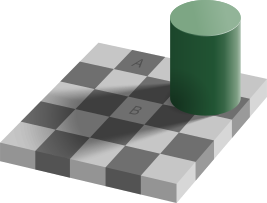

<!DOCTYPE html>

<html>
  <head>
    <meta
      name="viewport" 
      content="width=device-width, initial-scale=1.0, maximum-scale=1.0, user-scalable=0"
    />
    <style>

      img {
        width:100%;
      }

      .slider {
        width: 100%;
        height: 610px;
        position: absolute;
        left: 0px;
        top:0px;
        background-image: url("checkerShadowIllusion.svg");
      }

      .thumb {
        touch-action: none;
        width: 215px;
        height: 288px;
        position: relative;
        background-image: url("biduleSmall.png");
        cursor: pointer;
      }

      * {
      margin: 0;
      padding: 0;
      }


    </style>


  </head>

  <body>
<!--
        
      -->


    <div id="slider" class="slider">
      <div id="r" class="thumb"></div>
    </div>
 

    <script>
      //   document.addEventListener("DOMContentLoaded", readyGo );


      /*
      on récupère un élément html : thumb
      on lui assigne l'évènemnt onpointerdown et la fonction associée :
        f(event) {
          shiftX = event.clientX - thumb.getBoundingClientRect().left
        }
bottom: 210
height: 55
left: 155
right: 205
top: 155
width: 50
x: 155
y: 155
------------------------------------------------------

        ---------------------------------------
        |                 ^          ^        |
        |                 |          |        |
        |                 | top      |        |
        |                 |          |bottom  |
        |                 v          |        |
        |         -------------      |        |
        |         |           |      |        |
        |         |    ●      |      |        |
------left------->|    |      |      v        |   
        |         -----|-------               |
        |  right       |                      |
-----------------------|------>               |
        |              |                      | 
        |              |                      |
        ---------------|------------------------
                       |
0------------------ clientX


------------------------------------------------------

        -----------------------------------------------
        |                 ^                ^          |
        |                 |                |          |
        |                 | top            |          |
        |                 |                |bottom    |
        |                 v                |          |
        |         ----------------------   |          |
        |         |                    |   |          |
        |         |<-- shiftX ---> ●   |   |          |
------left------->|                |   |   |          |   
        |         -----------------|----   v          |
        |  right                   |                  |
-----------------------------------|---->             |
        |                          |                  | 
        |                          |                  |
        ---------------------------|-------------------
                                   |
0------------------------------ clientX

-------155
--------------------------------------------------155+310=465


      */
      //let thumb = slider.querySelector('.thumb');
      let thumb = document.getElementById("r");
      console.log(thumb);
      let shiftX;
      let shiftY;
      let i=0;
      let j=0;

      function onThumbDown(event) {
        console.log("évènement onpointerdown ",i , " event.clientX =",event.clientX);
        i++;
        
        event.preventDefault(); // prevent selection start (browser action)
        //   console.log("event.clientX=",event.clientX);
        //  console.log("thumb.getBoundingClientRect()=",thumb.getBoundingClientRect());

        //console.log("thumb.getBoundingClientRect()=",thumb.getBoundingClientRect());

        shiftX = event.clientX - thumb.getBoundingClientRect().left;
        shiftY = event.clientY - thumb.getBoundingClientRect().top;
        //  console.log("shiftX ",shiftX);


        //cette ligne rend la capture du point 
          // retarget all pointer events (until pointerup) to thumb
        thumb.setPointerCapture(event.pointerId);

        thumb.onpointermove = onThumbMove;

        thumb.onpointerup = event => {
          // dragging finished, no need to track pointer any more
          // ...any other "drag end" logic here...
          thumb.onpointermove = null;
          thumb.onpointerup = null;
        }
      };

      function onThumbMove(event) {
        console.log("évènement onpointermove ",j, " event.clientX =", event.clientX);j++;


        let newLeft = event.clientX - shiftX - slider.getBoundingClientRect().left;
        // if the pointer is out of slider => adjust left to be within the boundarie;
        if (newLeft < 0) {
          newLeft = 0;
        }

        let rightEdge = slider.offsetWidth - thumb.offsetWidth;
        if (newLeft > rightEdge) {
          newLeft = rightEdge;
        }

        thumb.style.left = newLeft + 'px';


        let newTop = event.clientY - shiftY - slider.getBoundingClientRect().top;
        if (newTop < 0) {
          newTop = 0;
        }
   
        let topEdge = slider.offsetHeight - thumb.offsetHeight;
        if (newTop > topEdge) {
          newTop = topEdge;
        }
        //thumb.style.left = newLeft + 'px';
        thumb.style.top = newTop + 'px';

      };

      thumb.onpointerdown = onThumbDown;

      thumb.ondragstart = () => false;

    
    </script>
 
  </body>

